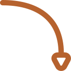
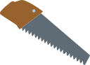
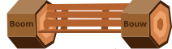

Concept

Bomen komen binnen vanwege bijvoorbeeld ouderdom.

Er wordt een design gemaakt voor de functie van het hout.

Het hout wordt op maat gezaagd.

Het gezaagde hout wordt gevormd tot het uiteindelijke product.
Stadshout is een initiatief, ontstaan in 2008 door de oprichters Crisow en Marijke. Het bedrijf verwerkt hout van Amsterdamse bomen. Met als idee: Hout van - door - voor de stad en haar bewoners. Het wordt gerund vrijwilligers, stagiares en medewerkers. Het hout komt op verschillende plekken terecht. Zo kunnen particulieren, maar ook bedrijven hout kopen. Daarnaast maken ze zelf ook dingen in opdracht van bijvoorbeelde de gemeente.